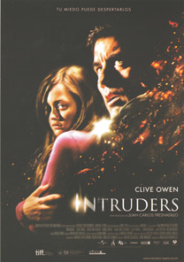

Intruders
Mia Farrow persigue al gato de sus abuelos hasta un árbol, encontrándose tras trepar para buscarlo, un hueco en el tronco, del que, al introducir su mano, saca una cajita con un papel donde figura una historia de la que Mia se apropia para una redacción del colegio.
La historia habla de "Carahueca", un monstruo sin rostro que estuvo dormido durante años y que vuelve a la vida gracias a que alguien dijo su nombre de nuevo. Un monstruo que vaga por la ciudad dispuesto a robar la cara de un niño para él.
En ese punto se hace borroso el escrito, que Mia no sabe cómo continuar, encomendándole la profesora que lo haga para el siguiente día.
Y ese día Mia cumple 12 años, y tras la celebración retoma la historia, inventando el final.
La gente miraba sin ver a Carahueca, que deseaba ser amado, y para ello necesitaría una cara, por lo que entró en una casa, y tras olvidarse de que buscaba la de un niño decidió robar la de una niña.
Al escribir la historia Mia se asusta y acude a la habitación de sus padres, tratando su padre de tranquilizarla con el osito que le regaló por su cumpleaños.
John, su padre, que trabaja en la construcción trata de ayudarla y consolarla ya que la muchacha está convencida de que el monstruo está en su casa y la espía, y para que lo olvide, le pide que entre en el cuento del monstruo, pues así conseguirá que sus pesadillas se acaben. De hecho lo materializan. Crean un monstruo y lo queman en el jardín para liberarse así de él, aunque antes de que arda totalmente aparece su madre y lo apaga.
Entretanto, en Madrid, otro muchacho, Juan, sufre pesadillas cada noche en las que ve también a Carahueca.
Luisa, su madre, preocupada por él y no sabiendo cómo ayudarle habla con el padre Antonio, que trata de convencerlo, sin éxito, de que no debe temer a los cuentos.
El padre Antonio ve a Luisa tan preocupada que llega a hablar con otro sacerdote, ya anciano, al que le pide que le haga un exorcismo, aunque sea como placebo, para liberarlo de su monstruo interior, a lo que el sacerdote se niega, pues cree que no se debe jugar con cosas tan serias.
Entretanto, y en Londres, Mia sigue aterrorizada, y asegura que el monstruo está dentro de su casa, tratando su padre de convencerla de lo contrario, hasta que comprueba que su hija tiene razón y que hay alguien en su habitación, con el que se pelea, y el cual finalmente consigue huir.
El terror de Mia es tan grande que pierde el habla debido al shock, por lo que su padre decide poner una cámara en su cuarto, descubriendo gracias a ella que el intruso está nuevamente en su casa, por lo que debe enfrentarse nuevamente al malvado hombre sin rostro, que nuevamente consigue huir.
Debido a ello Mia sufre un shock anafiláctico y es ingresada.
Entretanto, en Madrid, Luisa lleva a Juan a la iglesia, donde el padre Antonio, pese a no estar especializado en ello somete a Juan a un simulacro de exorcismo, asegurándole a Juan que rezando conseguirá hacer huir a Carahueca.
Le pide además a Juan que le quite mentalmente la capucha a Carahueca para ver quién es y poder acabar con él, aunque cuando abre los ojos, el niño dice verlo allí en la iglesia.
Luisa, se asusta y piensa que el sacerdote no puede hacer nada, por lo que decide abandonar su casa, haciendo de inmediato las maletas para marcharse con su hijo.
Susanna, la esposa de John, preocupada por lo ocurrido en su casa los últimos días hace que su marido sea visto por una psiquiatra, la cual, tras mostrarle lo grabado por la cámara que puso en el cuarto de Mia concluye que no había nadie allí y que piensa que padece un síndrome llamado "follie a deux", que se produce cuando las mentes de dos personas se entrelazan y comparten una alucinación, estando segura de que el intruso solo vive en la imaginación de John y de Mia.
John, enfadado al verse cuestionado por Susanna, decide marcharse de casa pese a la complicada situación de Mia, que, aunque recuperada no puede hablar.
De vuelta a su casa, y mientras recoge sus cosas John oye que llegan Susanna y Mia, y se esconde en el armario de esta, viéndola cómo busca el escrito que encontró en el árbol y escribe en él: "Déjame en paz", tras lo que lleva el papel al armario y lo tira adentro.
Entretanto Juan, al que le gusta escribir, lo hace bajo sus sábanas por miedo a Carahueca, que vuelve a su habitación, por lo que llama asustado a su madre, aunque esta, acostada con alguien no se levanta.
Juan ve aterrado cómo Carahueca está a punto de atraparlo, mientras él sigue escondido bajo las sábanas. Y de pronto el monstruo desaparece.
Juan arranca entonces la hoja que estaba escribiendo, la mete en una cajita y, pese a estar lloviendo, sale a la calle, trepa hasta un árbol, e introduce la cajita en un hueco del mismo diciendo "ahí te quedas para siempre".
John va hasta ese árbol, y al introducir su mano en el hueco del mismo no encuentra una cajita, sino la pulsera que perdió Mia al coger la caja.
Tras ello John acude a ver a su madre, Luisa, tratando de buscar explicaciones a aquellos acontecimientos que ocurrieron cuando era solo el pequeño Juan, diciéndole ella que no le contó entonces la verdad porque trataba de protegerlo.
Entretanto Mia sufre una terrible alucinación viendo cómo su habitación va destruyéndose a su alrededor, viendo cómo Carahueca se acerca a ella, ante lo que grita aterrada, acudiendo su madre en su auxilio, comprobando que no hay nadie, pero que tampoco puede hacer nada por hacer que Mia respire, no haciéndole efecto la adrenalina, por lo que, asustada llama a John, que le cuenta a Mia la historia de Carahueca.
Y se la cuenta como la escribió, aunque ahora conociendo la verdad.
Carahueca vivía encerrado en un agujero al que no llegaban los rayos del sol - la cárcel - y recordaba a un niño con una cara parecida a la suya - Juan, su hijo - y tenía que encontrar esa cara.
Al ver a la madre besar al niño sintió envidia. Quería ser como ese niño y que alguien le quisiera, asi que decidió separar al niño de su madre y llevárselo a su guarida.
Se acercó a él -colándose en su habitación -. Al no poder encontrarlo se enfureció y golpeó a la madre. Apareció entonces él y Carahueca le dijo que no se asustara.
Se lo llevó, pero no pudo quitarle la cara, pues la madre del niño no estaba dispuesta a entregárselo y peleó por él hasta que Carahueca se resbaló y cayó accidentalmente al vacío.
Murió así realmente el padre de Juan, que ahora, ya adulto y tras pelear por ella consigue salvar la vida de su hija, que recupera la consciencia segura de que ya no volverá Carahueca, abrazándose finalmente John, Mia y Susanna.